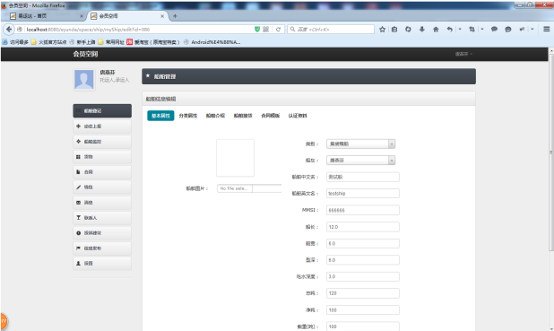

船舶管理：承运人或者承运人的子账号可以对船舶进行管理。托运人可点击我的船舶下拉菜单选择收藏船舶项可查看收藏的船舶信息。
进入个人空间后：选择“船舶管理”模块，界面如上图所示。此时有两种添加方式：
（1）
你可以点击“下载EXCEL模板”按钮，然后按照格式要求填写，最后点击“导入EXCEL”把你保存的EXCEL文件导入即可，这样你导入的船舶就会出现在你的列表中，该方法适合于添加大批量的船舶。
（2） 你可以点击“添加”按钮，进入如下图界面。

1)
在该界面选中“基本属性”选项，然后进行编辑，编辑完成后，点击“保存”按钮即可。
2)
选中“分类属性”选项，进入如上图界面。然后进行编辑，编辑完成后，点击“保存”按钮即可。